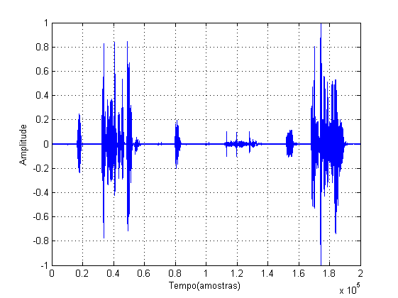
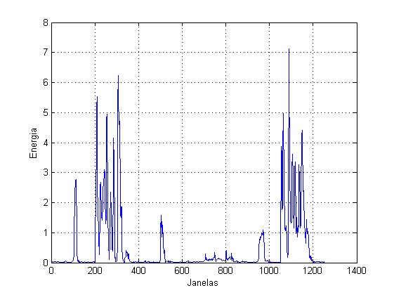
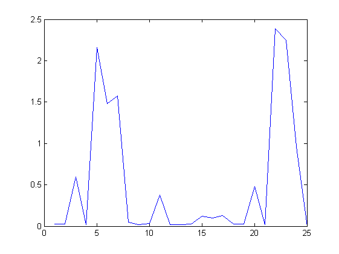
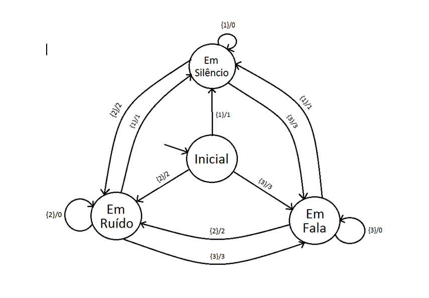
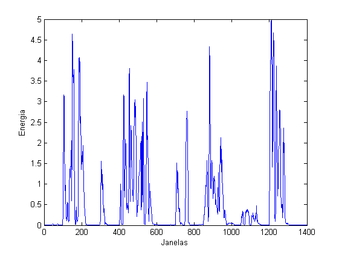
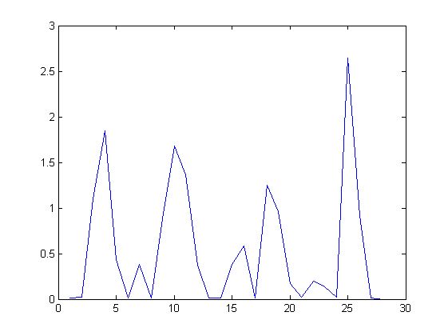
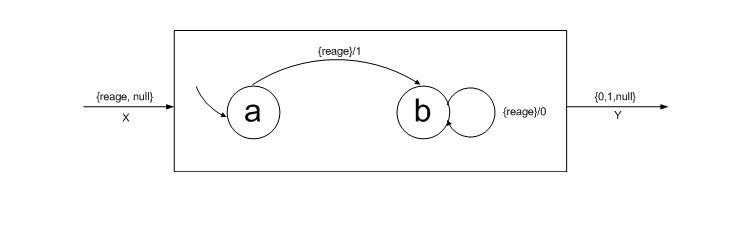
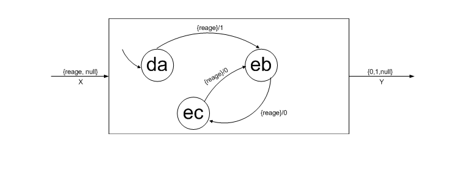

Laboratório nº 2 de Sistemas e sinais
Alunos: Ricardo Leitão nº69632 , Fábio Almeida nº70227
Turma/Turno: 3b
Grupo: 05
Data: 20/03/2012
Contents
Exercício 1. i)
[som, Fs] = wavread('Lab2-teste.wav');
sound(som, Fs)
Exercício 1. ii)
A resposta a esta questão é dada pelas seguintes variáveis: - Amostras do sinal (amostras); - Amplitude máxima (maxAmp); - Amplitude mínima (minAmp); - Duração do sinal (tempo);
tempo = length(som)/Fs maxAmp = max(abs(som)) minAmp = min(abs(som)) amostras = length(som)
tempo =
12.5000
maxAmp =
1
minAmp =
0
amostras =
200000
Exercício 1. iii)
figure(1), plot(som), grid on xlabel('Tempo(amostras)') ylabel('Amplitude') % function [energia] = calcula_energia(som, amostras, amostras20) % % Existem 625 janelas de 20ms em 12.5s. Como se quer uma sobreposição de % % 50% essas janelas não chegam e, portanto, multiplica-se pelo dobro para % % resolver esse problema. % janelas = (amostras/amostras20)*2; % energia = zeros(janelas, 1); % % som_index = 1; % for i = 1:janelas-1 % energia_janela = 0; % for j = 1:amostras20 % energia_janela = energia_janela + som(som_index)^2; % som_index = som_index + 1; % end % energia(i) = sqrt(energia_janela); % % atraso 50% % som_index = som_index - (amostras20/2); % end % end amostras20 = Fs * 0.020; [energia] = calcula_energia(som, amostras, amostras20); figure(2) plot(energia), grid on xlabel('Janelas') ylabel('Energia') 
Exercício 1. iv)
function [env_energia] = faz_envolvente(energia)
periodo = length(energia)/50; env_energia = zeros(periodo, 1);
index = 1;
for i = 1:periodo-1 media_periodo = 0; for j = 1:50 media_periodo = media_periodo + energia(index); index = index + 1; end env_energia(i) = media_periodo/50; end
end
[env_energia] = faz_envolvente(energia); figure(3); plot(env_energia);
Exercício 1. v)
figure(4)
imshow(imread('maq_estados.png'))
 Exercício 1. vi)
function [estado_seg, saida] = maq_estados(estado_actual, entrada) % Recebe o estado actual da máquina e o input, % devolve o próximo estado e a saída estado_seg = 'nulo'; saida = 'nulo';
switch estado_actual
case 'inicial'
switch entrada
case '1'
estado_seg = 'silencio';
saida = 1;
case '2'
estado_seg = 'ruido';
saida = 2;
case '3'
estado_seg = 'fala';
saida = 3;
otherwise end
case 'silencio'
switch entrada
case '1'
estado_seg = 'silencio';
saida = '0';
case '2'
estado_seg = 'ruido';
saida = 2;
case '3'
estado_seg = 'fala';
saida = 3;
end
case 'fala'
switch entrada
case '1'
estado_seg = 'silencio';
saida = 1;
case '2'
estado_seg = 'ruido';
saida = 2;
case '3'
estado_seg = 'fala';
saida = 0;
end
case 'ruido'
switch entrada
case '1'
estado_seg = 'silencio';
saida = 1;
case '2'
estado_seg = 'ruido';
saida = 0;
case '3'
estado_seg = 'fala';
saida = 3;
end
otherwise
end
endclear; [som,Fs] = wavread('Lab2-eval.wav'); amostras = length(som); amostras20 = Fs*0.020; energia = calcula_energia(som, amostras, amostras20); figure(5) plot(energia) xlabel('Janelas') ylabel('Energia') env_energia = faz_envolvente(energia); figure(6) plot(env_energia) estado_actual = 'inicial'; estado_seg = 'nulo'; saida = 'nulo'; for i=1 : length(env_energia) entrada = env_energia(i); if entrada > 1.5 entrada = '3'; else if entrada >0.5 entrada = '2'; else entrada = '1'; end end [estado_seg, saida] = maq_estados(estado_actual,entrada); if ~strcmp(estado_seg, estado_actual) fprintf('A máquina mudou para o estado %s\n', estado_seg); estado_actual = estado_seg; end end
Warning: Size vector should be a row vector with integer elements. A máquina mudou para o estado silencio A máquina mudou para o estado ruido A máquina mudou para o estado fala A máquina mudou para o estado silencio A máquina mudou para o estado ruido A máquina mudou para o estado fala A máquina mudou para o estado ruido A máquina mudou para o estado silencio A máquina mudou para o estado ruido A máquina mudou para o estado silencio A máquina mudou para o estado ruido A máquina mudou para o estado silencio A máquina mudou para o estado fala A máquina mudou para o estado ruido A máquina mudou para o estado silencio 
Exercício 1. vii)
Definição da máquina de estados: MaquinaEstados = (Estados,Entradas,Saidas,Actualizacao,EstadoInicial)
EstadoInicial = {Inicial}
Estados = {Inicial, EmSilencio, EmRuido, EmFala}
As entradas dizem respeito a nulo, silêncio, ruído e fala, respectivamente.
Entradas = {0, 1, 2, 3}
As saídas dizem respeito a zonas de silêncio, ruído e fala, respectivamente.
Saidas = {1, 2, 3}
Actualizacao(s(n), x(n)) = (s(n+1), y(n))
Em que s(n), x(n) e y(n) correspondem respectivamente ao conjunto de Estados, Entradas e Saídas.
Exercício 2.i)
A máquina A é bem-formada pois cada estado alcançável tem um só ponto fixo. Por outro lado, a máquina B não é bem-formada visto que, o estado inicial possuí dois pontos fixos. Por último, a máquina C também não é bem formada pois o estado 'i' tem dois pontos fixos.
% Máquina A figure(7); imshow(imread('2.i.png'))
Exercício 2.ii)
Para uma composição ser bem formada basta que uma das máquinas o seja. Assim, sabendo que a máquina A é bem-formada, a composição com retroacção de B e A é bem-formada.
Exercício 2.iii)
figure(8);
imshow(imread('2.iii.png'))
 Exercício 2.iv)
function [estado_seg, saida] = Actualiza(estado, entrada)
estado_seg = 'nulo'; saida = 'nulo';
switch estado case '(dag)' switch entrada case 'reage' estado_seg = '(ebi)'; saida = '1'; otherwise estado_seg = estado; saida = 'nulo'; end case '(ebh)' switch entrada case 'reage' estado_seg = '(ecg)'; saida = '1'; otherwise estado_seg = estado; saida = {'nulo'}; end case '(ebi)' switch entrada case 'reage' estado_seg = '(ecg)'; saida = '0'; otherwise estado_seg = estado; saida = {'nulo'}; end case '(ecg)' switch entrada case 'reage' estado_seg = '(ebh)'; saida = '1'; otherwise estado_seg = estado; saida = {'nulo'}; end end
i = 0; estado = '(dag)';%Estado Inicial entrada = 'reage'; while(i < 10) % cada iteracção do ciclo corresponde a uma entrada 'reage' fprintf('Estado Actual: %s \n', estado) [estado_seg, saida] = Actualiza(estado, entrada); estado = estado_seg; fprintf('Saida: %s \n',saida); i = i + 1; end
Estado Actual: (dag) Saida: 1 Estado Actual: (ebi) Saida: 0 Estado Actual: (ecg) Saida: 1 Estado Actual: (ebh) Saida: 1 Estado Actual: (ecg) Saida: 1 Estado Actual: (ebh) Saida: 1 Estado Actual: (ecg) Saida: 1 Estado Actual: (ebh) Saida: 1 Estado Actual: (ecg) Saida: 1 Estado Actual: (ebh) Saida: 1